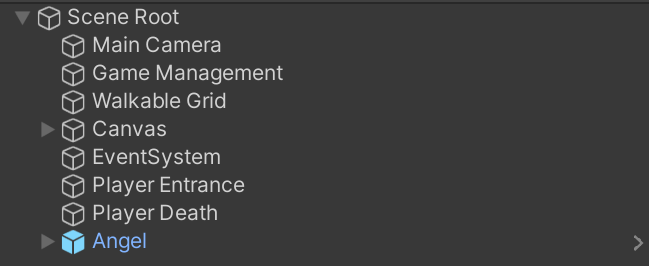

Creating Scenes
Heroes of the Shrine is divided into scenes. The Unity manual states:
Scenes are where you work with content in Unity. They are assets that contain all or part of a game or application. For example, you might build a simple game in a single scene, while for a more complex game, you might use one scene per level, each with its own environments, characters, obstacles, decorations, and UI . You can create any number of scenes in a project.
Each level can rely on multiple scenes, each representing a different part in the level. Scene transitions are costy in terms of client resources, thus they shouldn't occur very often. However, and even more important, is to use scenes where it fits.
Scene Structure
In our game, each scenes should have a Scene Root game object. Scene Root is a prefab, located in Assets/Prefabs, and it contains essential global objects and scripts (and even the player itself).

Scenes will also contain enemies, UI, and level definitions (encounters, transitions, cutscenes, etc.)
Note
All UI elements must live under the Canvas object in the Scene Root.
Create a Scene
To add a new scene follow these steps:
Create a scene asset in Assets/Scenes. Give it an indicative name, such as Level3Forest.
Get inside your new scene, by double clicking the asset.
Delete the Main Camera object that is included in the scene template. The Scene Root you are about to add, has a camera that already conatins all needed scripts.
Add Scene Root to the scene, by dragging it from Assets/Prefabs/Scene Root.
Add scene background using normal 2D sprites.
Set the walkable grid position and size.
Set world border in the camera's Camera Movement component.
Add the entrance cutscene inside Player Entrance object. Refer to the cutscenes manual, and skip steps 1-4 because they have already been done in Scene Root. Also, in step 6, the Playable Director already exists. You only need to attach the timeline from step 5 to it.
In Player Death, set the Objects To Destroy. The list should have the HUD (by default), and the foreground sprite of the level (you have to select it manually).
Add the enemies, encounters, hazards and cutscenes - everything that makes this scene unique.
Save your changes!
Warning
Ctrl+S is usually sufficient for saving, but sometimes it might skip some parts. In order to make sure you saved everything, right click the scene object in the hierarchy, and click "Save Scene".